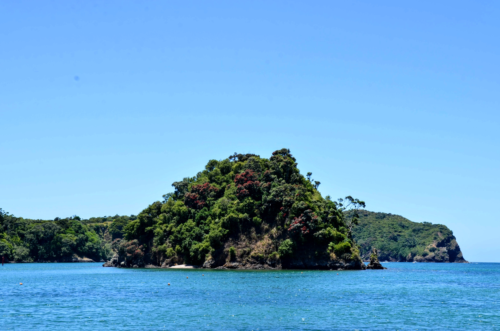

Plant invasions, islands, and humans.
My research lies at the intersection of plant biogeography, conservation, and humans, particularly on islands. This interest ultimately led me to explore the insular distribution of humans themselves. In parallel, I continue investigating the distribution of plants, especially non-natives. Currently, my research areas include biological invasions, island biogeography, and human geography.

BioMonI, which stands for Biodiversity Monitoring of Island Ecosystems, is a Biodiversa+ collaborative project aimed at establishing a global long-term monitoring of island biodiversity. Our working group aims to develop future scenarios of island conservation within the Nature Futures Framework.

In this project, we aim to systematically compile and map evidence on the individual and cumulative impacts of invasive plant species. We first developed a reproducible protocol to compile the available evidence systematically, which we are now applying to a set of plant species invasive to foreshore and riparian ecosystems in British Columbia.

Investigating the distribution of native and non-native species on islands and the interplay between plant traits, life histories, and island characteristics. The goal is to inform conservation bodies by providing effective management strategies.
We know how most species are distributed across islands, yet we know surprisingly little about humans. This project investigates how humans have occupied islands, historically and in the present, both at global and regional scales.